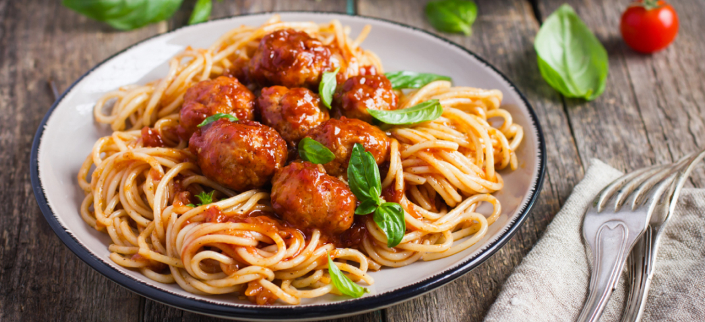

Błędne przekonanie: to danie pochodzi z Włoch.
Potrawa została wynaleziona dawno temu i niemożliwe jest ustalenie jej dokładnej "narodowości". W egipskich grobowcach z IV wieku p.n.e. znaleziono tabliczki przedstawiające ludzi przygotowujących makaron.
Wiele faktów historycznych skłania uczonych do spekulacji, że kultura makaronu została rozpowszechniona na całym świecie przez Rzymian podczas ich wojen podjazdowych w imię ekspansji imperium. Starożytny Rzym był bardzo gęsto zaludniony, a problem przechowywania żywności miał dla niego ogromne znaczenie.
W swojej nowoczesnej formie produkty z ciasta przybyły do Europy ze Wschodu. Do dziś w Japonii w Sylwestra zwyczajowo częstuje się gości długim i cienkim makaronem: ten, kto dostanie najdłuższy, będzie miał szczęście przez cały rok. Włoscy szefowie kuchni wymyślili oryginalne danie zwane makaronem, ale rosyjski makaron w stylu flotskim jest równie dobry.
Klopsiki to danie w formie mięsnych kulek. Mogą być gotowane lub smażone i można je łączyć z niemal każdym dodatkiem. Pochodzenie tego dania jest owiane nieprzeniknioną tajemnicą, ale pewne wskazówki i wskazówki językowe prowadzą nas do starożytnej Persji (obecnie Iran). Słynne danie kofta z jagnięciny wzięło swoją nazwę od perskiego słowa "koofteh", które oznacza "ubite mięso".
Po podbiciu całej Persji, "okrągłe kotlety" podbiły Bliski Wschód, a później pojawiły się w Europie. Wenecjanie byli w tamtych czasach mistrzami przypraw i ziół, a do duszonego mięsa dodali swój własny akcent. Tak powstało współczesne danie - klopsiki w pikantnym sosie z długim spaghetti, przepis, nad którym pracowało całe pokolenie ludzkości.